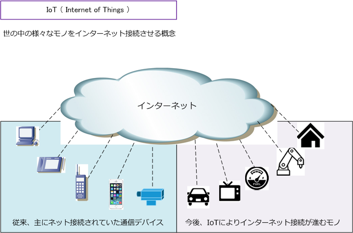
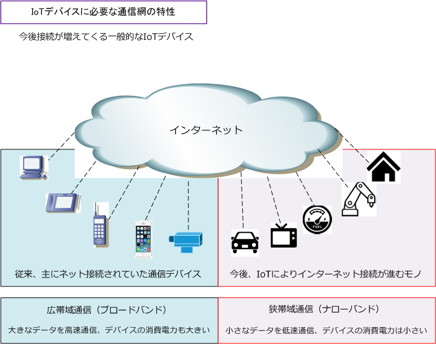
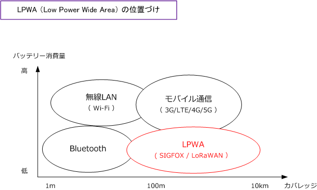
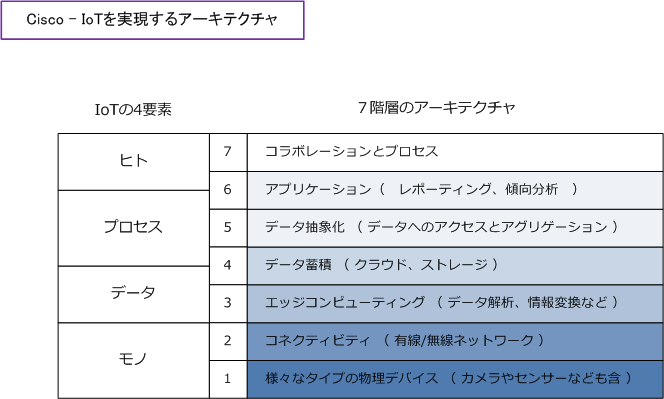

IoT ( Internet of Things )
IoT（Internet of Things）とは
IoTとは、コンピュータなどの通信機器だけでなく、世の中の様々なモノ（物）に通信機能を持たせた上で インターネットに接続させて相互に通信させることで「自動認識、自動制御、遠隔操作」などを可能にする 概念、または仕組みのことです。IoTの読み方は「アイオーティー」です。
IoT（ Internet of Things ）は「インターネットオブシングス」と呼ばれたり「モノのインターネット」と 呼ばれる場合があります。IoTでは、下図のように様々な「モノ」をインターネットに接続させて相互に通信 を行い「自動認識、自動制御、遠隔操作」などを可能にします。ここでいうモノはIoTデバイスと呼ばれます。

例えば、移動手段である自動車がインターネットに接続することで、GPS（全地球測位システム）から収集 される位置や速度などの情報、車両からの制御情報などのデータを「リアルタイムに」クラウド上に集めて ビッグデータを解析することで「渋滞」「交通事故」などの道路状況を把握して、クラウドから自動車へと これらの状況を自動配信して、迂回路の提示などの走行支援に役立てることができます。その他、検診員に 変わり電力メーターが電力会社と通信して電力使用量を申告するスマートメーターという形でも役立ちます。
IoTデバイスとインターネットとの接続方式
先ず、インターネットへの接続方法は「有線接続」と「無線接続」の大きく2種類があります。有線接続は 主にPCデバイスなどがEthernetLANという方式でデバイスにLANケーブルを接続させて、いわゆる固定回線 経由でインターネット通信を行う接続方式です。一方、無線接続は電波を利用して通信させる接続方式です。
無線接続の場合、通信距離が短い場合は「Wi-Fi」や「Bluetooth」などで通信を行うのが一般的です。また 通信距離が遠い場合は「LTE」「WiMAX」「3G」「4G」「5G」等の通信規格で通信を行うのが一般的です。 これらの無線通信は高速の通信網（ブロードバンド）ですが、利用するデバイスの消費電力は高くなります。
IoTデバイスでは無線接続で通信を行いますが、IoTにより新しくインターネット接続するIoTデバイスは、 小さなデータをやりとりする低消費電力のデバイス（low-powered devices）として設計されていることが 一般的であることから、一定の速度の出る低速な通信網（ナローバンド）による無線通信で十分となります。 そこで、IoTデバイスの場合、通信速度が遅い代わりに消費電力とコストの安い「 LPWA 」方式が最適です。

LPWA（Low Power Wide Area）は「低い消費電力」「広域対応の無線技術」「低いコスト」などの特性が あり、センサーなど小さなデータ送信に適したIoT向けのワイヤレスネットワークです。消費電力・通信速度 通信距離の相関関係図は下図の通りです。

IoTを実現するための通信方式であるLPWA規格には Sigfox、LoRaWAN、NB-IoT、LTE-M、RPMA などが あります。LPWAは通信方式によってセルラー系と非セルラー系の二つに大別されます。非セルラー系には SigfoxとLoRaWANなどが分類され、セルラー系にはNB-IoT、LTE-Mなどが分類されます。
SigfoxとLoRaWANは、日本ではSub-GHz帯の一つである920MHz帯を利用します。920MHz帯は Wi-Fi が 利用する周波数帯と同様に、ISMバンドと呼ばれる周波数帯でありますが、2.4GHz帯と比べると 電波干渉の影響が少ないです。NB-IoTとLTE-Mは、3GPPと呼ばれる標準化プロジェクトが作成した技術仕様をもとに 通信事業者が全国規模で構築したLTE網でサービスが提供されています。以下でメジャーなLPWA規格である 「Sigfox」「LoRaWAN」「NB-IoT」「LTE-M」の比較表を紹介します。
| 名称 | 大別 | 国際標準 | 利用周波数帯 | 最大伝送速度 | 最大伝送距離 |
|---|---|---|---|---|---|
| Sigfox | 非セルラー系 | 独自規格 | 920MHz | 超低速：100 bps | 10～40 km（郊外） |
| LoRaWAN | 非セルラー系 | オープン規格 | 920MHz | 低速：50 kbps | 10～15 km（郊外） |
| NB-IoT | セルラー系 | 3GPP | LTE帯域 | 低速：250 kbps | 10～20 km（郊外） |
| LTE-M | セルラー系 | 3GPP | LTE帯域 | 高速：1～4 Mbps | 10～15 km（郊外） |
IoT向けの通信プロトコル
IoT向けの通信プロトコルには「HTTP・HTTPS」「MQTT・MQTTS」「CoAP」の大きく3つがあります。 HTTPとHTTPSの関係と同様、MQTTSは、MQTTにTLSによるセキュリティ層を付加したプロトコルです。
・ HTTP（Hyper-Text Transfer Protocol） HTTPは、リクエストの順番通りにレスポンスのある同期プロトコルであることから、通信のタイミングを IoTシステムに任せられません。つまり、リアルタイム性の求められるIoTシステムではあまり使用されて いないプロトコルですが、リアルタイム性が重視されない大容量のデータ通信などでは採用されています。
・ MQTT（Message Queueing Telemetry Transport） MQTTは、IBMが開発したプロトコルであり、最も使用されているIoTシステム向けの通信プロトコルです。 HTTPと同じくTCP/IPネットワーク上で使用できるプロトコルですが、ヘッダ部分が 2～5 byte と小さく、 データ量が小さくなり、HTTPS通信よりも大幅に消費電力を抑えることができます。また、HTTPとは違い MQTTでは非同期通信を採用していることからリアルタイム性に優れており、多数の通信デバイス間で短い メッセージを多く送受信する用途に最適なプロトコルです。
MQTTではパブリッシュ/サブスクライブモデルを実装しています。メッセージの送信者（パブリッシャー） をメッセージの受信者（サブスクライバー）から分離しています。代わりに、ブローカーと呼ばれる第三の コンポーネントがパブリッシャーとサブスクライバー間の通信を処理します。
・ CoAP（Constrained Application Protocol）とは CoAPは、IoTやM2M（Machine to Machine）向けのプロトコルです。CPUに加えてRAM/ROM、I/Oポート を1つの集積回路にまとめた極小コンピュータであるマイコンなどの小電力デバイスの通信に向いています。 CoAPでは伝送効率を考慮してトランスポート層ではUDPプロトコルを使用します。また、セキュアな通信を 実現したい場合にはDTLS（Datagram TLS）により伝送路を暗号化することもできます。
IoTシステムで最も使用されているプロトコルのMQTTでは、パブリッシュ/サブスクライブモデルでデータ 伝送を行います。一方、CoAPではHTTPを意識して動作することからCoAPはHTTPベースのRESTful APIを IoTデバイス向けに軽量化したものであると言えます。
IoE（Internet of Everything）とは
IoEとは、Cisco Systems社が提唱する「あらゆるものが接続されたインターネット」という意味であり、 IoEは「ヒト、プロセス、データ、モノのすべてをインターネットでつないで新しい価値を創造する」概念 として位置付けています。ただしIoTとIoEは、同義であり「IoT」という用語が広く周知されたことから Cisco社も「IoE」という言葉を使っていましたが、現在は「IoE」に拘らないという見解を出しています。
Cisco Systemsでは、IoTを実現するアーキテクチャとして下図の7階層の構造に基づいて、ネットワーク 機器を中心に様々な製品を提供しています。

Ciscoの考える「シスコIoTアーキテクチャ」は、当初は以下の4階層の構造に基づいた資料となっていました。 「クラウド」「インターネット」「フォグコンピューティング」「スマートオブジェクトセンサー・デバイス」 現在では上図の7階層としていますが、今後のIoTの普及状況や販売戦略等により変更になる可能性もあります。